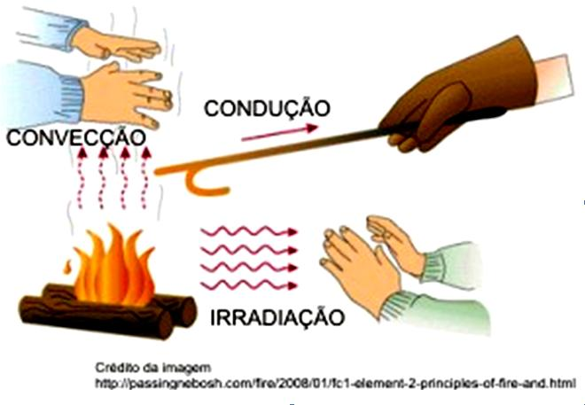
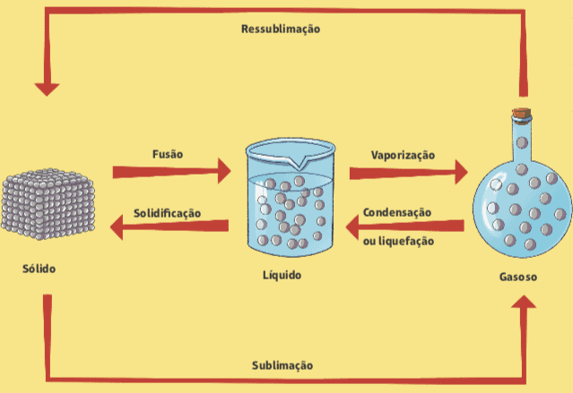
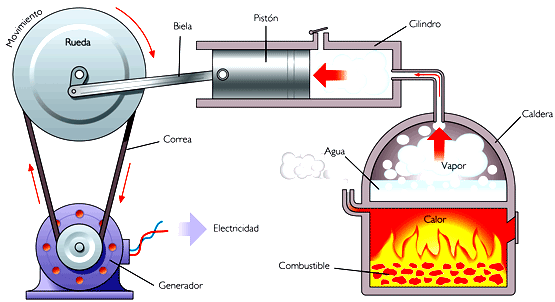

Já sabemos que a energia térmica de um corpo possui a tendência de passar do corpo mais "quente" para o corpo mais "frio", processo conhecido como transferência de calor. Porém, o calor não depende necessariamente de um contato entre os corpos (ou seja, não é necessário que os corpos estejam encostando um no outro para que ocorra transferência de calor).
Pense, por exemplo, no seguinte exemplo: você chega perto de um forno no qual alguém está assando um bolo. É necessário encostar no forno para perceber que ele está quente? Conforme é possível atestar na vida real, mesmo sem encostar, há transferência de calor do forno para você!
Diante disso, vamos neste capítulo explicar as três formas com que a energia térmica é transferida de uma região do sistema com maior temperatura para aquela de menor temperatura, até que se atinja o equilíbrio térmico. O calor pode ser transmitido por condução, convecção e radiação (não confundir com irradiação).

Esse é o processo mais intuitivo. Um exemplo desse caso de transferência de calor é o de uma colher metálica utilizada para mexer a comida na panela. O calor da fonte térmica, neste caso, o fogão, poderá ser sentido pela colher e chegar até a mão de quem a segura. Ou seja, a energia é conduzida pelo meio.
Por isso, chamamos esse fenômeno de condução: a energia é levada de partícula para partícula no meio. A nível molecular, cada partícula vibrando na região mais quente transfere sua energia para as vizinhas, fazendo com que elas também aumentem seu nível de agitação. Mas, cuidado, é a energia que está transitando, enquanto as partículas apenas se agitam, mas continuam nas mesmas posições. Note também que é um fenômeno dependente da matéria (ou seja, não há condução no vácuo).
No contexto da condução, a transferência de calor por uma barra foi objeto de estudo do matemático Jean-Baptiste Joseph Fourier. Ele relacionou a diferença de temperatura entre as extremidades da barra com o fluxo de energia térmica que transitava por ela, ou seja, quanto calor Q atravessava uma seção reta da barra em determinado intervalo de tempo.
Essa relação era dependente da espessura da barra, de seu comprimento l (a área A de sua seção reta) e do material de que ela é feita (matematicamente representado por uma constante K, a condutividade térmica de um material). O nome dado a ela foi Lei de Fourier.
Nesse contexto, ficou evidente que a condução de calor é melhor em determinados tipos de materiais. Por exemplo, barras metálicas conduzem calor melhor do que uma barra de vidro. Por isso, os metais são chamados de bons condutores térmicos - e materiais como o vidro e o isopor como bons isolantes térmicos.
A convecção é uma forma de transferência de calor em que a matéria também transita junto à energia. O mais imediato exemplo desse caso de transferência de calor está em uma sala com ar-condicionado. Nesse exemplo, os aparelhos de ar-condicionado devem preferencialmente estar na parte de cima da sala, pois o ar frio é mais denso e irá se deslocar para baixo, enquanto o ar quente, menos denso, sobe. Note que acontece, no exemplo, um trânsito de partículas de ar que carregavam consigo energia térmica.
Esse fluxo de matéria que carrega energia térmica é conhecido como corrente de convecção. Ela necessita, portanto, de um meio material fluido (gás ou líquido, por exemplo). Além disso, para que as densidades dos fluidos de temperaturas diferentes produzam essa movimentação, é necessário a presença de um campo gravitacional.
Esse fenômeno é também vital para a manutenção de diversos ecossistemas, regulando a temperatura e a umidade para que os seres vivos continuem sujeitos às condições para as quais são adaptados. Também está presente no manto terrestre, em que o magma se movimenta por correntes de convecção, movendo também as placas tectônicas.
A radiação é um exemplo de transferência de calor muito importante para a existência da vida na Terra. Afinal de contas, é por esse fenômeno que a energia térmica do Sol pode alcançar nosso planeta, evitando, assim, que as temperaturas na Terra fossem extremamente baixas.
Como estudado anteriormente, tanto a condução quanto a convecção são formas de transferência de calor que dependem de um meio material para acontecer. Evidentemente, deveria existir uma forma de transferência de calor que pudesse atravessar o vácuo do espaço. Essa é a radiação.
Na radiação, o que acontece é a emissão de ondas eletromagnéticas que carregam energia. Essa energia é convertida em energia térmica ao ser absorvida. O mais interessante é que o fenômeno não se limita ao Sol. Ainda que em quantidades ínfimas, todo corpo emite essas ondas, que ocorrem na faixa de frequência chamada de infravermelho. As câmeras termais se utilizam desse fato para encontrar corpos que estão com temperatura maior que os demais em um ambiente - dado que esses corpos emitem mais radiação térmica.
Uma característica importante da matéria é a forma como as partículas que a compõem estão organizadas. Isso define, como o leitor deve recordar, qual a fase que essa matéria se encontra: sólida, líquida ou gasosa.
A fase sólida é aquela em que as partículas não possuem grande liberdade para se mover, estando fortemente ligadas umas às outras. Nessa fase, a matéria possui forma e volume bem definidos. O que acontece com as partículas são vibrações em torno de uma determinada posição.
Já na fase líquida, as partículas passam a ter uma maior liberdade de movimentação, mas elas ainda estão consideravelmente ligadas umas às outras. Nessa fase, a matéria possui um volume bem definido, porém, a forma que ela assume é aquela do recipiente em que se encontra.
Por fim, na fase gasosa, as partículas são fracamente ligadas umas às outras, com altíssimo grau de liberdade para se moverem. Dessa forma, os gases não possuem nem forma, nem volume definidos, ocupando todo o volume disponível no recipiente e assumindo seu formato.

Agora que relembramos as três fases da matéria, temos que entender como a matéria sai de uma fase para outra, sob a ótica da termologia. Por exemplo, o que acontece com um cubo de gelo derretendo? E com a água vaporizando em uma chaleira?
Como sabemos, o calor absorvido por um corpo pode causar uma variação de temperatura. Porém, existem também ocasiões em que o corpo absorve calor, porém, não aumenta sua temperatura. Do mesmo modo, existem cenários em que ele cede calor, mas não tem sua temperatura reduzida. Nesses casos, dizemos que houve troca de calor latente.
Contudo, o que acontece com o calor latente? O calor latente é fornecido para que as partículas passem a ter um maior nível de agregação ou recebido para que elas passem a ter um menor nível de agregação.
Em outras palavras, o calor latente é fornecido por um corpo que passa de uma fase menos agregada para uma mais agregada (da fase líquida para a sólida, por exemplo); e é recebido por um corpo que passa de uma fase mais agregada para outra menos (da fase líquida para a gasosa, por exemplo).
Importante: Processos em que o corpo perde calor são chamados de exotérmicos, já os processos em que o corpo recebe calor são chamados de endotérmicos.
Quando consideramos as fases sólida e líquida, os processos de mudança de fase relacionados são chamados de fusão e solidificação. A fusão ocorre quando um material no estado sólido passa para o estado líquido, como o caso de um gelo derretendo, ou quando um artesão derrete ouro para fazer uma joia. Já o processo contrário, quando a matéria sai da fase líquida para a sólida, é chamada de solidificação.
Para os processos de mudança de fase de materiais puros, existe um fato importante: a temperatura em que esse processo ocorre é fixa e constante durante todo o processo, para uma determinada condição de pressão.
Isso significa dizer que todos os blocos de gelo derretendo sob condições normais de pressão estão na mesma temperatura, que é conhecida como temperatura de fusão da água - ou 0 ºC. Da mesma forma, a água líquida se transforma em gelo quando chega a 0 ºC.
Cada substância pura possui uma determinada temperatura em que ocorre a fusão e a solidificação, conhecida como ponto de fusão. Além disso, o calor necessário para solidificar uma unidade de massa de água a 0 ºC em gelo, à mesma temperatura, é igual à quantidade de calor necessária para fundir essa mesma unidade de massa de gelo a 0 ºC em água à mesma temperatura. Isso é válido para todas as substâncias: a quantidade de calor latente para a fusão de determinada massa de uma substância é a mesma que para a solidificação dessa mesma massa da substância em questão.
A vaporização e a liquefação são os processos de transformação de fase líquida e gasosa. A liquefação, também chamada de condensação, ocorre, portanto, quando uma matéria no estado gasoso perde calor e passa ao estado líquido. Esse é o fenômeno que acontece quando vemos as gotículas de água se formando em volta de um copo gelado de refrigerante.
Da mesma forma que na fusão e solidificação, existe uma temperatura específica para cada substância sofrer os processos de vaporização e liquefação, considerando as mesmas condições de pressão. Essa temperatura é chamada de ponto de ebulição. Porém, o processo de vaporização ainda pode ocorrer em outras temperaturas que não a de ebulição, fenômeno chamado de evaporação.
Ou seja, para a vaporização, podemos falar de dois tipos mais comuns. A ebulição é um processo que ocorre rapidamente e em uma temperatura específica conhecida como ponto de ebulição. Um exemplo é a água de uma chaleira, que vaporiza quando atinge 100 ºC. Já a evaporação não acontece em uma temperatura específica, mas é um processo lento. É o que acontece com uma poça de água, que lentamente desaparece após uma chuva. É claro que aumentar a temperatura favorece também a vaporização, mas a substância não precisa alcançar seu ponto de ebulição. Nesse caso, a pressão é um fator mais relevante que a temperatura, e isso também explica o porquê de o calor latente necessário para a ebulição ser diferente daquele para a evaporação.
A completa explicação dessa diferença, porém, foge ao escopo deste livro. Existe, ainda, a calefação, que é uma ebulição praticamente instantânea, pois ocorre a temperaturas muito superiores ao seu ponto de ebulição. É possível observar esse processo quando gotas de água caem em uma chapa quente: a água vaporiza muito rápido, pois a chapa está a uma temperatura bem maior que 100 ºC (ponto de ebulição da água).
Há, ainda, uma mudança de fase direta entre a fase sólida e a fase gasosa - ou vice-versa. Nesse caso, não há passagem pela fase líquida. Para que isso aconteça, existem condições de pressão específicas.
Anteriormente, discutimos o conceito de energia térmica e aprofundamos nossa compreensão de como ela se transfere na forma de calor. Analisamos também como essa transferência ocorre entre corpos com diferentes temperaturas, bem como sua fundamental importância na mudança de fase de uma substância. Contudo, ao longo dos estudos de Física, o leitor muito provavelmente ouviu falar de diversos outros tipos de energia, como energia mecânica, energia potencial química, energia elétrica etc.
Nos fenômenos físicos, muitas vezes, podemos observar que determinado tipo de energia é convertido em outro. Por exemplo, ao carregar nossos aparelhos celulares na tomada, temos um exemplo de conversão de energia elétrica em energia potencial química, armazenada na bateria do equipamento.
De modo análogo, a energia térmica e o calor se transformam de acordo com os princípios da termodinâmica. No nível molecular, essa transformação se torna evidente: quando um corpo recebe calor, sua temperatura aumenta, o que implica no aumento da energia cinética das moléculas que o compõem.
Lei da Conservação da Energia: A energia nunca desaparece, ela é sempre convertida em outros tipos de energia. Algumas vezes, dizemos que um sistema perde energia, mas essa energia é apenas dissipada para outro sistema, não desaparecendo do universo.

Imagine o processo de ebulição da água. Ao transformarmos água líquida em vapor, esse vapor possui energia cinética que pode ser aproveitada. Contudo, como esse aproveitamento pode ser feito? Podemos, por exemplo, transferir o movimento desse vapor para as pás de uma turbina. O movimento dessa turbina (convertido em eletricidade, por exemplo) pode ser utilizado, posteriormente, para mover as engrenagens de algum equipamento.
O conceito de transformar o calor em energia cinética útil foi estudado desde a Grécia Antiga, por um inventor chamado Heron de Alexandria, ainda no século I d.C. Heron criou um aparato que utilizava o vapor, gerado pelo aquecimento da água, para girar uma esfera metálica. A energia térmica é convertida em energia cinética do movimento da esfera. Naquele momento da história, esse movimento não foi aproveitado em nenhuma aplicação prática.
Contudo, séculos mais tarde, surgiriam as máquinas à vapor, que aproveitam, em diversas aplicações, o movimento gerado a partir do mesmo princípio. Esse tipo de sistema, que converte a energia térmica em outro tipo, é chamado de máquina térmica. Em um esquema geral, as máquinas térmicas recebem calor de uma fonte de energia térmica e convertem parte dessa energia em uma energia útil (ou trabalho), enquanto uma outra parte é perdida. Podemos também interpretar que, nesses casos, temos calor fluindo de uma fonte "quente", a uma temperatura maior, até uma fonte "fria", a uma temperatura menor. Parte desse calor, então, é convertida em um tipo de energia útil para realizar a função da máquina.
Outro conceito importante para as máquinas térmicas é o de combustível, que é utilizado em muitos casos para garantir que existe uma diferença de temperatura que gere o fluxo de calor. Nesse caso, são esses combustíveis que geram o aquecimento, por meio de uma reação físico-química chamada de combustão.
O trabalho, que é a energia útil gerada pela máquina térmica, é utilizado das mais variadas maneiras: movimentar veículos e outras máquinas (como as utilizadas em fábricas), alimentar a rede elétrica que chega nas nossas casas, entre muitas outras aplicações. O motor a combustão é um tipo de máquina térmica.